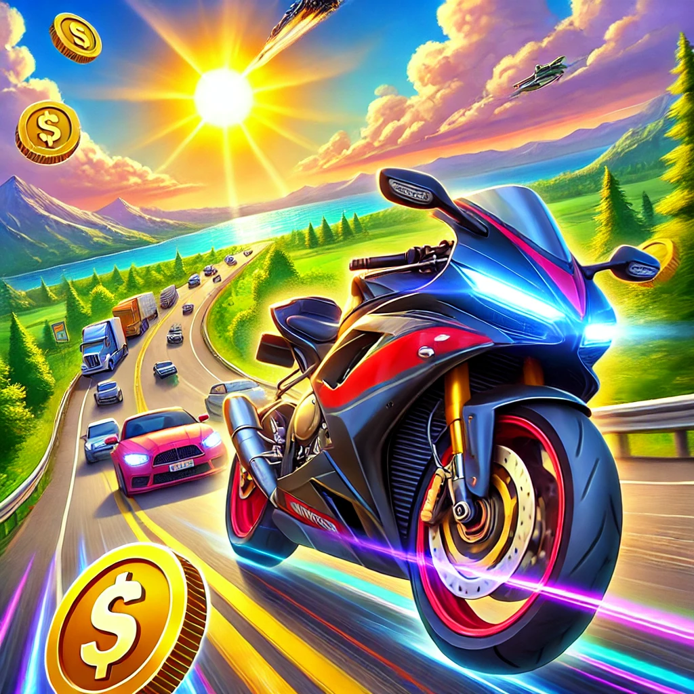

If you are a fan of high-speed bikes, open roads, and adrenaline-pumping adventures, you’ve probably heard of the game Traffic Rider. This game has taken the mobile gaming world by storm with its realistic graphics, immersive gameplay, and thrilling challenges. But let’s be real—earning money in Traffic Rider to buy your dream bike or upgrade your existing one can feel like trying to cross a busy intersection without a traffic light: long, tedious, and sometimes downright impossible.
Well, what if I told you there’s a way to rev up your gaming experience? Yes, my friend, we're talking about Traffic Rider Unlimited Money. So, grab your helmet, tighten your gloves, and let’s dive into the world where money flows like fuel in a high-octane superbike.
Before we zoom into the details of unlimited money, let’s take a quick pit stop to talk about what makes Traffic Rider so special. Developed by Soner Kara, this first-person motorbike simulation game is not just about racing; it’s about experiencing the thrill of riding on endless highways while dodging traffic, overtaking cars, and completing missions.
The game’s beauty lies in its simplicity. You’re on a bike, the road stretches endlessly ahead, and the goal is to keep riding while earning points and cash. With over 20 different motorbikes, realistic engine sounds, and various modes like Career, Endless, and Time Trial, Traffic Rider is more than just a game—it’s a digital escape for bike lovers.
Let’s face it—earning money in Traffic Rider can sometimes feel slower than riding a scooter in a traffic jam. You spend hours completing missions, only to realize you’re still short of buying that shiny Hayabusa or Ducati-lookalike bike you’ve been eyeing.
Here’s where unlimited money swoops in like a superhero on two wheels. With unlimited money, you can:
Now, you might be wondering, “How do I get this magical feature?” Well, there are a few ways to achieve unlimited money in Traffic Rider, but here’s a little disclaimer: some methods involve downloading modified versions of the game (MOD APKs), which may not be officially endorsed.
But hey, life’s a ride, and sometimes you have to take the scenic route, right? Just make sure you’re downloading from a trusted source to avoid unwanted “traffic” in your phone (read: viruses and malware).
Here’s why unlimited money is a game-changer:
Depends on your perspective! If you play purely for fun, it’s more like bending the rules to enhance your experience. Life’s too short to save for a virtual bike, right?
Imagine telling your friend you got the coolest bike with “hard work and dedication,” while casually hiding the unlimited money secret. Classic!
Even with unlimited money, the real fun is in the gameplay. Here are some tips:
Picture this: you’re riding your upgraded superbike at full speed, dodging cars like a pro, and feeling like the king of the road. Suddenly, a friend leans over and asks, “How did you get that bike?”
You casually reply, “Oh, just hard work, dedication, and… unlimited money!”
Hey, you didn’t lie—you just left out a tiny detail.
Traffic Rider is a game that offers endless fun, but with unlimited money, it’s like adding nitro to your ride. Whether you’re a casual gamer looking for stress-free fun or a bike enthusiast wanting to try every virtual ride, unlimited money takes the game to a whole new level.
So, what are you waiting for? Gear up, hit the road, and enjoy the ride of a lifetime. And remember, in the world of Traffic Rider, the road never ends, and neither should the fun.